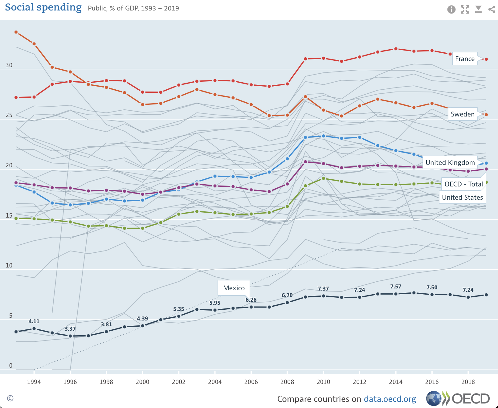
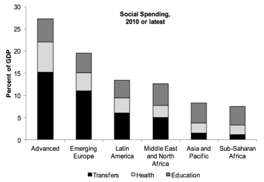

<!DOCTYPE html>
<html lang="en">
  <head>
    <meta charset="utf-8" />
    <meta name="viewport" content="width=device-width, initial-scale=1.0, maximum-scale=1.0, user-scalable=no" />

    <title></title>
    <link rel="stylesheet" href="dist/reveal.css" />
    <link rel="stylesheet" href="css/stefano.css" id="theme" />
    <link rel="stylesheet" href="plugin/highlight/zenburn.css" />
	<link rel="stylesheet" href="css/layout.css" />
	<link rel="stylesheet" href="plugin/customcontrols/style.css">

	<link rel="stylesheet" href="plugin/reveal-pointer/pointer.css" />


    <script defer src="dist/fontawesome/all.min.js"></script>

	<script type="text/javascript">
		var forgetPop = true;
		function onPopState(event) {
			if(forgetPop){
				forgetPop = false;
			} else {
				parent.postMessage(event.target.location.href, "app://obsidian.md");
			}
        }
		window.onpopstate = onPopState;
		window.onmessage = event => {
			if(event.data == "reload"){
				window.document.location.reload();
			}
			forgetPop = true;
		}

		function fitElements(){
			const itemsToFit = document.getElementsByClassName('fitText');
			for (const item in itemsToFit) {
				if (Object.hasOwnProperty.call(itemsToFit, item)) {
					var element = itemsToFit[item];
					fitElement(element,1, 1000);
					element.classList.remove('fitText');
				}
			}
		}

		function fitElement(element, start, end){

			let size = (end + start) / 2;
			element.style.fontSize = `${size}px`;

			if(Math.abs(start - end) < 1){
				while(element.scrollHeight > element.offsetHeight){
					size--;
					element.style.fontSize = `${size}px`;
				}
				return;
			}

			if(element.scrollHeight > element.offsetHeight){
				fitElement(element, start, size);
			} else {
				fitElement(element, size, end);
			}		
		}


		document.onreadystatechange = () => {
			fitElements();
			if (document.readyState === 'complete') {
				if (window.location.href.indexOf("?export") != -1){
					parent.postMessage(event.target.location.href, "app://obsidian.md");
				}
				if (window.location.href.indexOf("print-pdf") != -1){
					let stateCheck = setInterval(() => {
						clearInterval(stateCheck);
						window.print();
					}, 250);
				}
			}
	};


        </script>
  </head>
  <body>
    <div class="reveal">
      <div class="slides"><section  data-markdown><script type="text/template"><!-- .slide: class="drop" -->
<div class="" style="position: absolute; left: 0px; top: 0px; height: 700px; width: 960px; min-height: 700px; display: flex; flex-direction: column; align-items: center; justify-content: center" absolute="true">

# Comparative Political Economy of Fiscal Policy and Redistribution

IP2031 Comparative Political Economy

Stefano Pagliari
</div></script></section><section ><section data-markdown><script type="text/template"><!-- .slide: class="drop" -->
<div class="" style="position: absolute; left: 0px; top: 0px; height: 700px; width: 960px; min-height: 700px; display: flex; flex-direction: column; align-items: center; justify-content: center" absolute="true">

## Fiscal Policy
</div></script></section><section data-markdown><script type="text/template"><!-- .slide: class="drop" -->
<div class="" style="position: absolute; left: 0px; top: 0px; height: 700px; width: 960px; min-height: 700px; display: flex; flex-direction: column; align-items: center; justify-content: center" absolute="true">

### What is Fiscal Policy?
- &shy;<!-- .element: class="fragment" data-fragment-index="1" -->Raising of revenues through **taxation** and **debt**
- &shy;<!-- .element: class="fragment" data-fragment-index="2" -->Set of policies accomplished through government **spending**
</div></script></section><section data-markdown><script type="text/template"><!-- .slide: class="drop" -->
<div class="" style="position: absolute; left: 0px; top: 0px; height: 700px; width: 960px; min-height: 700px; display: flex; flex-direction: column; align-items: center; justify-content: center" absolute="true">

### Why does fiscal policy matter?

- &shy;<!-- .element: class="fragment" data-fragment-index="1" -->Central instrument for achieving **social** and **economic policy** goals
- &shy;<!-- .element: class="fragment" data-fragment-index="2" -->Used for the purpose of **redistribution** of income and wealth from some indidividuals to others
- &shy;<!-- .element: class="fragment" data-fragment-index="3" -->Measure of the overall **size of government**
</div></script></section></section><section ><section data-markdown><script type="text/template"><!-- .slide: class="drop" -->
<div class="" style="position: absolute; left: 0px; top: 0px; height: 700px; width: 960px; min-height: 700px; display: flex; flex-direction: column; align-items: center; justify-content: center" absolute="true">

## Main Trends in Government Spending
</div></script></section><section data-markdown><script type="text/template"><!-- .slide: class="drop" -->
<div class="" style="position: absolute; left: 0px; top: 0px; height: 700px; width: 960px; min-height: 700px; display: flex; flex-direction: column; align-items: center; justify-content: center" absolute="true">

### Increase in Government Spending in the XXth Century

<iframe src="https://ourworldindata.org/grapher/historical-gov-spending-gdp?tab=chart" loading="lazy" style="width: 100%; height: 600px; border: 0px none;"></iframe>
</div></script></section><section data-markdown><script type="text/template"><!-- .slide: class="drop" -->
<div class="" style="position: absolute; left: 0px; top: 0px; height: 700px; width: 960px; min-height: 700px; display: flex; flex-direction: column; align-items: center; justify-content: center" absolute="true">

### Increase in Government Spending in the XXth Century

- &shy;<!-- .element: class="fragment" data-fragment-index="1" -->**Mean level of government spending** has increased in the XXth century
	- &shy;<!-- .element: class="fragment" data-fragment-index="2" -->19th century: European govts spent less than 10% of GDP
	- &shy;<!-- .element: class="fragment" data-fragment-index="3" -->Significant increase between 1945-1980
	- &shy;<!-- .element: class="fragment" data-fragment-index="4" -->Slowing down in growth of government spending since 1980s
- &shy;<!-- .element: class="fragment" data-fragment-index="5" -->**Today**: Governments in advanced industrial countries collect and spend on average around 45% of GDP
</div></script></section><section data-markdown><script type="text/template"><!-- .slide: class="drop" -->
<div class="" style="position: absolute; left: 0px; top: 0px; height: 700px; width: 960px; min-height: 700px; display: flex; flex-direction: column; align-items: center; justify-content: center" absolute="true">

### Social Spending

- &shy;<!-- .element: class="fragment" data-fragment-index="1" -->Growth of social spending in second half of XXthc driven by growth in social spending
- &shy;<!-- .element: class="fragment" data-fragment-index="2" -->**Key areas**
	- &shy;<!-- .element: class="fragment" data-fragment-index="3" -->Health care
	- &shy;<!-- .element: class="fragment" data-fragment-index="4" -->Education
	- &shy;<!-- .element: class="fragment" data-fragment-index="5" -->Old age 
	- &shy;<!-- .element: class="fragment" data-fragment-index="6" -->Unemployment
	- &shy;<!-- .element: class="fragment" data-fragment-index="7" -->Family
	- &shy;<!-- .element: class="fragment" data-fragment-index="8" -->Housing
</div></script></section><section data-markdown><script type="text/template"><!-- .slide: class="drop" -->
<div class="" style="position: absolute; left: 0px; top: 0px; height: 700px; width: 960px; min-height: 700px; display: flex; flex-direction: column; align-items: center; justify-content: center" absolute="true">

### Rise in Social Spending

<iframe src="https://ourworldindata.org/grapher/social-spending-oecd-longrun" loading="lazy" style="width: 100%; height: 600px; border: 0px none;"></iframe>
</div></script></section><section data-markdown><script type="text/template"><!-- .slide: class="drop" -->
<div class="" style="position: absolute; left: 0px; top: 0px; height: 700px; width: 960px; min-height: 700px; display: flex; flex-direction: column; align-items: center; justify-content: center" absolute="true">

## Variation in Government Spending Across Countries
</div></script></section><section data-markdown><script type="text/template"><!-- .slide: class="drop" -->
<div class="" style="position: absolute; left: 0px; top: 0px; height: 700px; width: 960px; min-height: 700px; display: flex; flex-direction: column; align-items: center; justify-content: center" absolute="true">

### Variations in Government Spending Across OECD Economies


<iframe src="https://data.oecd.org/chart/6SCb" loading="lazy" style="width: 100%; height: 550px; border: 0px none;"></iframe>
</div></script></section><section data-markdown><script type="text/template"><!-- .slide: class="drop" -->
<div class="" style="position: absolute; left: 0px; top: 0px; height: 700px; width: 960px; min-height: 700px; display: flex; flex-direction: column; align-items: center; justify-content: center" absolute="true">

### Variation in Public Spending Across the World Today


<iframe src="https://ourworldindata.org/grapher/total-gov-expenditure-gdp-wdi" loading="lazy" style="width: 100%; height: 600px; border: 0px none;"></iframe>
</div></script></section><section data-markdown><script type="text/template"><!-- .slide: class="drop" -->
<div class="" style="position: absolute; left: 0px; top: 0px; height: 700px; width: 960px; min-height: 700px; display: flex; flex-direction: column; align-items: center; justify-content: center" absolute="true">

### E.g Difference between spending in US and Sweden across time
<iframe src="https://ourworldindata.org/grapher/historical-gov-spending-gdp?tab=chart&country=USA~SWE" loading="lazy" style="width: 100%; height: 600px; border: 0px none;"></iframe>
</div></script></section><section data-markdown><script type="text/template"><!-- .slide: class="drop" -->
<div class="" style="position: absolute; left: 0px; top: 0px; height: 700px; width: 960px; min-height: 700px; display: flex; flex-direction: column; align-items: center; justify-content: center" absolute="true">

### Variation in Social Spending Across Industrialized Economies


<iframe src="https://data.oecd.org/chart/6SzY" loading="lazy" style="width: 100%; height: 500px; border: 0px none;"></iframe>
</div></script></section><section data-markdown><script type="text/template"><!-- .slide: class="drop" -->
<div class="" style="position: absolute; left: 0px; top: 0px; height: 700px; width: 960px; min-height: 700px; display: flex; flex-direction: column; align-items: center; justify-content: center" absolute="true">

### Beyond Social Spending: Models of Welfare State (Esping-Andersen)

- &shy;<!-- .element: class="fragment" data-fragment-index="1" -->**Liberal** welfare state
	- &shy;<!-- .element: class="fragment" data-fragment-index="2" -->Means-tested assistance for low-income groups.
	- &shy;<!-- .element: class="fragment" data-fragment-index="3" -->Welfare sold through the market (privatization)
	- &shy;<!-- .element: class="fragment" data-fragment-index="4" -->E.g. USA, UK, Canada, and Australia
- &shy;<!-- .element: class="fragment" data-fragment-index="5" -->**Corporatist** welfare state
	- &shy;<!-- .element: class="fragment" data-fragment-index="6" -->Not universal. Benefits attached to class and status (e.g. excludes non-working women)
	- &shy;<!-- .element: class="fragment" data-fragment-index="7" -->E.g. Austria, France, Germany, and Italy.
- &shy;<!-- .element: class="fragment" data-fragment-index="8" -->**Social democratic regime**
	- &shy;<!-- .element: class="fragment" data-fragment-index="9" -->Universal benefits. Social rights were extended also to the new middle class
	- &shy;<!-- .element: class="fragment" data-fragment-index="10" -->E.g. Denmark, Sweden, Finland, Norway
</div></script></section><section data-markdown><script type="text/template"><!-- .slide: class="drop" -->
<div class="" style="position: absolute; left: 0px; top: 0px; height: 700px; width: 960px; min-height: 700px; display: flex; flex-direction: column; align-items: center; justify-content: center" absolute="true">

## Social Spending in Recent Decades
</div></script></section><section data-markdown><script type="text/template"><!-- .slide: class="drop" -->
<div class="" style="position: absolute; left: 0px; top: 0px; height: 700px; width: 960px; min-height: 700px; display: flex; flex-direction: column; align-items: center; justify-content: center" absolute="true">

### Welfare State Under Siege? 
- &shy;<!-- .element: class="fragment" data-fragment-index="1" -->Decrease in growth rates since the 1970s and increase in unemployment
- &shy;<!-- .element: class="fragment" data-fragment-index="2" -->Constraints on capacity of governments to finance social policy
- &shy;<!-- .element: class="fragment" data-fragment-index="3" -->Austerity policies after the financial crisis
- &shy;<!-- .element: class="fragment" data-fragment-index="4" -->Has the welfare states entered an era of “permanent austerity” (Pierson 1998)?
</div></script></section><section data-markdown><script type="text/template"><!-- .slide: class="drop" -->
<div class="" style="position: absolute; left: 0px; top: 0px; height: 700px; width: 960px; min-height: 700px; display: flex; flex-direction: column; align-items: center; justify-content: center" absolute="true">

### Social Spending in Recent Decades


</div></script></section><section data-markdown><script type="text/template"><!-- .slide: class="drop" -->
<div class="" style="position: absolute; left: 0px; top: 0px; height: 700px; width: 960px; min-height: 700px; display: flex; flex-direction: column; align-items: center; justify-content: center" absolute="true">

### Social Spending in Recent Decades

 Little evidence welfare states have undergone dramatic cutbacks
- But no overall increase
- Variation across different programs
	- E.g. UK cut public housing but not health care
- Variation across Welfare models
	- e.g. Increase in Scandinavian countries, stable in Liberal countries
</div></script></section><section data-markdown><script type="text/template"><!-- .slide: class="drop" -->
<div class="" style="position: absolute; left: 0px; top: 0px; height: 700px; width: 960px; min-height: 700px; display: flex; flex-direction: column; align-items: center; justify-content: center" absolute="true">


<small class="caption">Source: 📖 Tridico (2018) 'Inequality in Financial Capitalism'</small>
</div></script></section></section><section ><section data-markdown><script type="text/template"><!-- .slide: class="drop" -->
<div class="" style="position: absolute; left: 0px; top: 0px; height: 700px; width: 960px; min-height: 700px; display: flex; flex-direction: column; align-items: center; justify-content: center" absolute="true">

##  Explaining Fiscal Policy: Theoretical Perspectives
</div></script></section><section data-markdown><script type="text/template"><!-- .slide: class="drop" -->
<div class="" style="position: absolute; left: 0px; top: 0px; height: 700px; width: 960px; min-height: 700px; display: flex; flex-direction: column; align-items: center; justify-content: center" absolute="true">

### Economic Development and the Size of the State: Theory

- &shy;<!-- .element: class="fragment" data-fragment-index="1" -->“Wagner’s law”
	- &shy;<!-- .element: class="fragment" data-fragment-index="2" -->1892: Adolph **Wagner** conjectured that higher levels of income would be associated with higher levels of spending on social programs
- &shy;<!-- .element: class="fragment" data-fragment-index="3" -->Economic Developments leads to
	- &shy;<!-- .element: class="fragment" data-fragment-index="4" -->New **resources** available to finance spending
	- &shy;<!-- .element: class="fragment" data-fragment-index="5" -->Incentives for governments to **educate** workforce (Wilensky 1975)
	- &shy;<!-- .element: class="fragment" data-fragment-index="6" -->Destruction of **traditional social institutions** (Polanyi 1944): Rise in electoral demands for public compensation and risk sharing
</div></script></section><section data-markdown><script type="text/template"><!-- .slide: class="drop" -->
<div class="" style="position: absolute; left: 0px; top: 0px; height: 700px; width: 960px; min-height: 700px; display: flex; flex-direction: column; align-items: center; justify-content: center" absolute="true">

### Economic Development and the Size of the State: Evidence


<iframe src="https://ourworldindata.org/grapher/country-level-government-spending-vs-income" loading="lazy" style="width: 100%; height: 600px; border: 0px none;"></iframe>
</div></script></section><section data-markdown><script type="text/template"><!-- .slide: class="drop" -->
<div class="" style="position: absolute; left: 0px; top: 0px; height: 700px; width: 960px; min-height: 700px; display: flex; flex-direction: column; align-items: center; justify-content: center" absolute="true">

### Economic Development and the Size of the State: Evidence



<small class="caption">Source: Bastagli et al 2012</small>
</div></script></section><section data-markdown><script type="text/template"><!-- .slide: class="drop" -->
<div class="" style="position: absolute; left: 0px; top: 0px; height: 700px; width: 960px; min-height: 700px; display: flex; flex-direction: column; align-items: center; justify-content: center" absolute="true">

### Economic Development and the Size of the State: Evidence

- Wilensky (1975) and Franzese (2002): positive correlation between economic development and social spending during the post–World War II period in OECD economies.
- Weaker evidence for countries outside the OECD (Adsera & Boix 2002, Mares 2005)
</div></script></section><section data-markdown><script type="text/template"><!-- .slide: class="drop" -->
<div class="" style="position: absolute; left: 0px; top: 0px; height: 700px; width: 960px; min-height: 700px; display: flex; flex-direction: column; align-items: center; justify-content: center" absolute="true">

### Globalization and Spending: Theory

- &shy;<!-- .element: class="fragment" data-fragment-index="1" -->**Retreat of the State Hypothesis** 
	- &shy;<!-- .element: class="fragment" data-fragment-index="2" -->Increasingly mobile international capital leads to tax competition (Cerny 1997)
- &shy;<!-- .element: class="fragment" data-fragment-index="3" -->**Compensation Hypothesis**
	- &shy;<!-- .element: class="fragment" data-fragment-index="4" -->Governments introduce social insurance schemes to compensate workers whose income is threatened by external competition (Garrett 1998) and trade volatility (Rodrik 1998)
</div></script></section><section data-markdown><script type="text/template"><!-- .slide: class="drop" -->
<div class="" style="position: absolute; left: 0px; top: 0px; height: 700px; width: 960px; min-height: 700px; display: flex; flex-direction: column; align-items: center; justify-content: center" absolute="true">

### Globalization and Spending: Evidence from Industrialized Economies

- OECD economies: positive relationship between openness & size of public sector (Cameron 1978, Garrett & Mitchell 2001)


</div></script></section><section data-markdown><script type="text/template"><!-- .slide: class="drop" -->
<div class="" style="position: absolute; left: 0px; top: 0px; height: 700px; width: 960px; min-height: 700px; display: flex; flex-direction: column; align-items: center; justify-content: center" absolute="true">

### Globalization and Spending: Evidence from Developing Countries

- Increase in economic openness associated with decline welfare expenditures (Rudra 2002)


</div></script></section><section data-markdown><script type="text/template"><!-- .slide: class="drop" -->
<div class="" style="position: absolute; left: 0px; top: 0px; height: 700px; width: 960px; min-height: 700px; display: flex; flex-direction: column; align-items: center; justify-content: center" absolute="true">

### Median Voter and Spending

- **Meltzer-Richard Model** (1981): Preferences over tax rates as a function of a voter’s income 
- **Low-income** citizens can be expected to support higher taxes/spending
- **High-income** citizens can be expected to support lower taxes/spending
- **Median voter**’s income determines government policy


</div></script></section><section data-markdown><script type="text/template"><!-- .slide: class="drop" -->
<div class="" style="position: absolute; left: 0px; top: 0px; height: 700px; width: 960px; min-height: 700px; display: flex; flex-direction: column; align-items: center; justify-content: center" absolute="true">

### Elite Theories and Spending

- &shy;<!-- .element: class="fragment" data-fragment-index="1" -->What count is the preferences of the **top 1%**, not the median voter (Gilens 2012, Gilens & Page 2014)
	- &shy;<!-- .element: class="fragment" data-fragment-index="2" -->Greater **resources** to influence policies (e.g. campaign donations)
	- &shy;<!-- .element: class="fragment" data-fragment-index="3" -->More “**anti-welfare**” preferences (Bartels and Seawright 2013, Scruggs and Hayes 2017)
- &shy;<!-- .element: class="fragment" data-fragment-index="4" -->Feedback Loop
	- &shy;<!-- .element: class="fragment" data-fragment-index="5" -->Inequality increases the **political influence of wealthy** individuals vis-à-vis the rest of the population
	- &shy;<!-- .element: class="fragment" data-fragment-index="6" -->Wealthy individuals promote **lower spending/taxation**
	- &shy;<!-- .element: class="fragment" data-fragment-index="7" -->Policies lead to **higher inequality**
</div></script></section><section data-markdown><script type="text/template"><!-- .slide: class="drop" -->
<div class="" style="position: absolute; left: 0px; top: 0px; height: 700px; width: 960px; min-height: 700px; display: flex; flex-direction: column; align-items: center; justify-content: center" absolute="true">

### Democracy and Redistribution

- &shy;<!-- .element: class="fragment" data-fragment-index="1" -->**Meltzer-Richard Model**: Democratic institutions empower those who stand to benefit from redistribution (low-income citizens)
- &shy;<!-- .element: class="fragment" data-fragment-index="2" -->Evidence: Significant variance in redistribution within the same regime type.
</div></script></section><section data-markdown><script type="text/template"><!-- .slide: class="drop" -->
<div class="" style="position: absolute; left: 0px; top: 0px; height: 700px; width: 960px; min-height: 700px; display: flex; flex-direction: column; align-items: center; justify-content: center" absolute="true">

### Varieties of democratic institutions and Redistribution

- Proportional systems associated with larger & more redistributive social welfare programs & larger size of government (Iversen & Soskice 2006)
- Majoritarian governments more likely to spend on “pork-barrel projects” that favour local interests (Persson & Tabellini 1999).
</div></script></section><section data-markdown><script type="text/template"><!-- .slide: class="drop" -->
<div class="" style="position: absolute; left: 0px; top: 0px; height: 700px; width: 960px; min-height: 700px; display: flex; flex-direction: column; align-items: center; justify-content: center" absolute="true">

### Social Forces and Redistribution


- **Power-Resource Theory**: Level of spending linked to balance of power between workers and employers (Korpi 1983)
- Focus on levels of **trade-union** organization, share of votes, and parliamentary and cabinet seats held by **left** or **labor parties**.
</div></script></section><section data-markdown><script type="text/template"><!-- .slide: class="drop" -->
<div class="" style="position: absolute; left: 0px; top: 0px; height: 700px; width: 960px; min-height: 700px; display: flex; flex-direction: column; align-items: center; justify-content: center" absolute="true">

### Partisanship and Redistribution
- Parties of the right should be more committed to cutting public expenditures than parties of the left (Boix 1998)
- Positive association between presence of left-wing parties in government and growth of the state (Huber and Stephens 2001)
</div></script></section><section data-markdown><script type="text/template"><!-- .slide: class="drop" -->
<div class="" style="position: absolute; left: 0px; top: 0px; height: 700px; width: 960px; min-height: 700px; display: flex; flex-direction: column; align-items: center; justify-content: center" absolute="true">

### Workers vs. Workers and Redistribution

- &shy;<!-- .element: class="fragment" data-fragment-index="1" -->Assumption of Power-Resource Theory: left wants broader welfare state
- &shy;<!-- .element: class="fragment" data-fragment-index="2" -->Rueda (2005): left-wing parties in the post-war period focused on serving “insiders” – workers with secure employment who constitute the base of the party.
</div></script></section><section data-markdown><script type="text/template"><!-- .slide: class="drop" -->
<div class="" style="position: absolute; left: 0px; top: 0px; height: 700px; width: 960px; min-height: 700px; display: flex; flex-direction: column; align-items: center; justify-content: center" absolute="true">

###  **Workers vs. Capital** and Redistribution
- &shy;<!-- .element: class="fragment" data-fragment-index="1" -->Assumption of Power-Resource Theory: employers want minimal welfare state
- &shy;<!-- .element: class="fragment" data-fragment-index="2" -->Mares (2003): companies exposed to risks will favor a social insurance system where risks are shared (e.g. universalistic unemployment and accident insurance).
</div></script></section><section data-markdown><script type="text/template"><!-- .slide: class="drop" -->
<div class="" style="position: absolute; left: 0px; top: 0px; height: 700px; width: 960px; min-height: 700px; display: flex; flex-direction: column; align-items: center; justify-content: center" absolute="true">

### New Interest Groups and Redistribution

- &shy;<!-- .element: class="fragment" data-fragment-index="1" -->**Puzzle**: Power of organized labor and left parties has shrunk in many countries, but little evidence that decline had impact on welfare states.
- &shy;<!-- .element: class="fragment" data-fragment-index="2" -->Pierson (1994): Emergence of **new groups** that benefited from welfare programmes (e.g. pensioners, the disabled, unemployed, health care consumers, public employees)
	- &shy;<!-- .element: class="fragment" data-fragment-index="3" -->Pierson (1994): “*the unpopularity of program cutbacks and the emergence of new bases of support will give politicians pause even where unions and left parties are weak*”.

--- 

### Cultural Explanations and Redistribution

- **Attitudes** towards the poor and inequality
	- Alesina, Glaeser & Sacerdote (2001): absence of “European style” welfare state in the US can be explained by differing attitudes toward the poor
- **Racial & ethnic diversity** 
	- Alesina & Glaeser (2004): social spending correlates with ethnic, linguistic, and religious fractionalization
	- Racial Group Loyalty: individuals support more welfare spending as share of local recipients from their racial group rises (Luttmer 2001).
- **Religion**
	- Religiousness associated with less support for social spending (Scheve and Stavasage 2006)
</div></script></section></section><section  data-markdown><script type="text/template"><!-- .slide: class="drop" -->
<div class="" style="position: absolute; left: 0px; top: 0px; height: 700px; width: 960px; min-height: 700px; display: flex; flex-direction: column; align-items: center; justify-content: center" absolute="true">

## Conclusion

- &shy;<!-- .element: class="fragment" data-fragment-index="1" -->Significant variations across countries in the level of social expenditures and redistribution
- &shy;<!-- .element: class="fragment" data-fragment-index="2" -->Multiple explanations
	- &shy;<!-- .element: class="fragment" data-fragment-index="3" -->Economic transformations (industrialization and globalization)
	- &shy;<!-- .element: class="fragment" data-fragment-index="4" -->Domestic Institutions
	- &shy;<!-- .element: class="fragment" data-fragment-index="5" -->Social Classes and Interest Groups
	- &shy;<!-- .element: class="fragment" data-fragment-index="6" -->Cultural Explanations
</div></script></section></div>
    </div>

    <script src="dist/reveal.js"></script>

    <script src="plugin/markdown/markdown.js"></script>
    <script src="plugin/highlight/highlight.js"></script>
    <script src="plugin/zoom/zoom.js"></script>
    <script src="plugin/notes/notes.js"></script>
    <script src="plugin/math/math.js"></script>
	<script src="plugin/mermaid/mermaid.js"></script>
	<script src="plugin/chart/chart.min.js"></script>
	<script src="plugin/chart/plugin.js"></script>
	<script src="plugin/menu/menu.js"></script>
	<script src="plugin/customcontrols/plugin.js"></script>
	<script src="plugin/reveal-pointer/pointer.js"></script>

    <script>
      function extend() {
        var target = {};
        for (var i = 0; i < arguments.length; i++) {
          var source = arguments[i];
          for (var key in source) {
            if (source.hasOwnProperty(key)) {
              target[key] = source[key];
            }
          }
        }
        return target;
      }

	  function isLight(color) {
		let hex = color.replace('#', '');

		// convert #fff => #ffffff
		if(hex.length == 3){
			hex = `${hex[0]}${hex[0]}${hex[1]}${hex[1]}${hex[2]}${hex[2]}`;
		}

		const c_r = parseInt(hex.substr(0, 2), 16);
		const c_g = parseInt(hex.substr(2, 2), 16);
		const c_b = parseInt(hex.substr(4, 2), 16);
		const brightness = ((c_r * 299) + (c_g * 587) + (c_b * 114)) / 1000;
		return brightness > 155;
	}

	var bgColor = getComputedStyle(document.documentElement).getPropertyValue('--r-background-color').trim();
	var isLight = isLight(bgColor);

	if(isLight){
		document.body.classList.add('has-light-background');
	} else {
		document.body.classList.add('has-dark-background');
	}

      // default options to init reveal.js
      var defaultOptions = {
        controls: true,
        progress: true,
        history: true,
        center: true,
        transition: 'default', // none/fade/slide/convex/concave/zoom
        plugins: [
          RevealMarkdown,
          RevealHighlight,
          RevealZoom,
          RevealNotes,
          RevealMath.MathJax3,
		  RevealMermaid,
		  RevealChart,
		  RevealCustomControls,
		  RevealMenu,
	      RevealPointer,
        ],


    	allottedTime: 120 * 1000,

		mathjax3: {
			mathjax: 'plugin/math/mathjax/tex-mml-chtml.js',
		},
		markdown: {
		  gfm: true,
		  mangle: true,
		  pedantic: false,
		  smartLists: false,
		  smartypants: false,
		},

		mermaid: {
			theme: isLight ? 'default' : 'dark',
		},

		customcontrols: {
			controls: [
				{id: 'toggle-overview',
				title: 'Toggle overview (O)',
				icon: '<i class="fa fa-th"></i>',
				action: 'Reveal.toggleOverview();'
				},
			]
		},
		menu: {
			loadIcons: false
		}
      };

      // options from URL query string
      var queryOptions = Reveal().getQueryHash() || {};

      var options = extend(defaultOptions, {"width":960,"height":700,"margin":0.04,"controls":true,"progress":true,"slideNumber":true,"transition":"fade","transitionSpeed":"slow"}, queryOptions);
    </script>

    <script>
      Reveal.initialize(options);
    </script>
  </body>

  <!-- created with Advanced Slides -->
</html>
